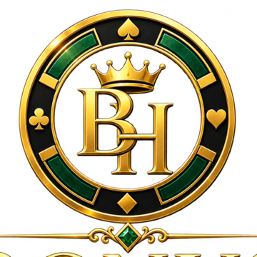

Bonus
Hunter
Hunter
FIND THE BONUS · ENJOY THE HUNT
Bodoni Moda — luxe, high-contrast, polished casino editorial.
BONUS HUNTER · LOGO FONT LAB
Same black, gold, and emerald identity—four different type directions. This is a preview only; the live logo stays unchanged until you choose one.

Bodoni Moda — luxe, high-contrast, polished casino editorial.
Cormorant Garamond — romantic, aspirational, a little more fashion-forward.
Cinzel — dramatic, premium, and most traditional casino.
DM Serif Display — confident, clean, and especially readable on mobile.